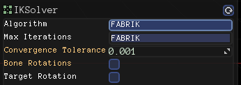

TheComet
I’m a little bit concerned. Whenever I select the algorithm from the dropdown in the UI, the scratch buffer increases by a bit.

All I’m doing is clicking on this dropdown over and over, and this is what I see in the log. Is this a problem?
[Sun Apr 23 04:54:41 2017] INFO: [IK] Rebuilding effector nodes list
[Sun Apr 23 04:54:41 2017] INFO: [IK] There are 1 effector(s) involving 4 node(s). 0 chain(s) were created
[Sun Apr 23 04:54:41 2017] DEBUG: Resized scratch buffer to size 74176
[Sun Apr 23 04:54:57 2017] INFO: [IK] Rebuilding effector nodes list
[Sun Apr 23 04:54:57 2017] INFO: [IK] There are 1 effector(s) involving 4 node(s). 0 chain(s) were created
[Sun Apr 23 04:54:57 2017] DEBUG: Resized scratch buffer to size 94784
[Sun Apr 23 04:54:59 2017] INFO: [IK] Rebuilding effector nodes list
[Sun Apr 23 04:54:59 2017] INFO: [IK] There are 1 effector(s) involving 4 node(s). 0 chain(s) were created
[Sun Apr 23 04:54:59 2017] DEBUG: Resized scratch buffer to size 115392
[Sun Apr 23 04:55:00 2017] INFO: [IK] Rebuilding effector nodes list
[Sun Apr 23 04:55:00 2017] INFO: [IK] There are 1 effector(s) involving 4 node(s). 0 chain(s) were created
[Sun Apr 23 04:55:00 2017] DEBUG: Resized scratch buffer to size 136000
[Sun Apr 23 04:55:01 2017] INFO: [IK] Rebuilding effector nodes list
[Sun Apr 23 04:55:01 2017] INFO: [IK] There are 1 effector(s) involving 4 node(s). 0 chain(s) were created
[Sun Apr 23 04:55:01 2017] DEBUG: Resized scratch buffer to size 156608
[Sun Apr 23 04:55:02 2017] INFO: [IK] Rebuilding effector nodes list
[Sun Apr 23 04:55:02 2017] INFO: [IK] There are 1 effector(s) involving 4 node(s). 0 chain(s) were created
[Sun Apr 23 04:55:02 2017] DEBUG: Resized scratch buffer to size 177216
[Sun Apr 23 04:55:02 2017] INFO: [IK] Rebuilding effector nodes list
[Sun Apr 23 04:55:02 2017] INFO: [IK] There are 1 effector(s) involving 4 node(s). 0 chain(s) were created
[Sun Apr 23 04:55:02 2017] DEBUG: Resized scratch buffer to size 197824
[Sun Apr 23 04:55:03 2017] INFO: [IK] Rebuilding effector nodes list
[Sun Apr 23 04:55:03 2017] INFO: [IK] There are 1 effector(s) involving 4 node(s). 0 chain(s) were created
[Sun Apr 23 04:55:03 2017] DEBUG: Resized scratch buffer to size 218432
[Sun Apr 23 04:55:04 2017] INFO: [IK] Rebuilding effector nodes list
[Sun Apr 23 04:55:04 2017] INFO: [IK] There are 1 effector(s) involving 4 node(s). 0 chain(s) were created
[Sun Apr 23 04:55:04 2017] DEBUG: Resized scratch buffer to size 239040
[Sun Apr 23 04:55:05 2017] INFO: [IK] Rebuilding effector nodes list
[Sun Apr 23 04:55:05 2017] INFO: [IK] There are 1 effector(s) involving 4 node(s). 0 chain(s) were created
[Sun Apr 23 04:55:05 2017] DEBUG: Resized scratch buffer to size 259648